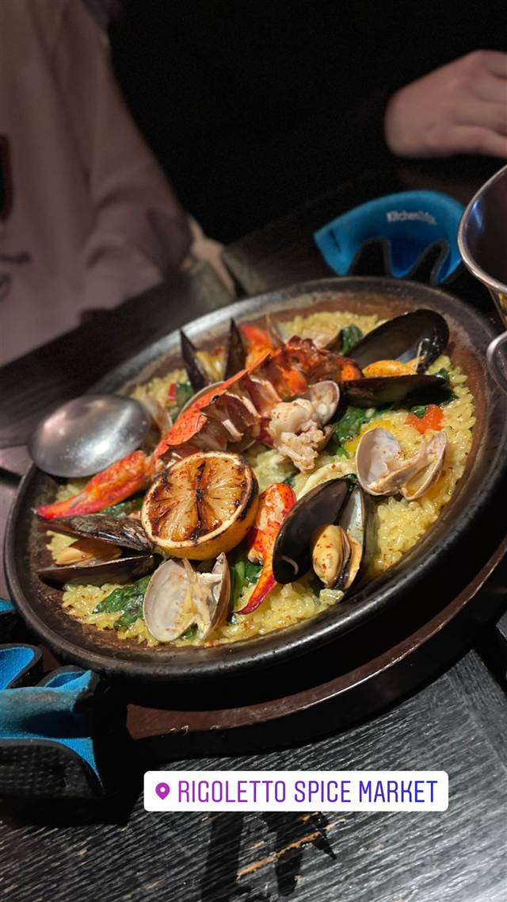
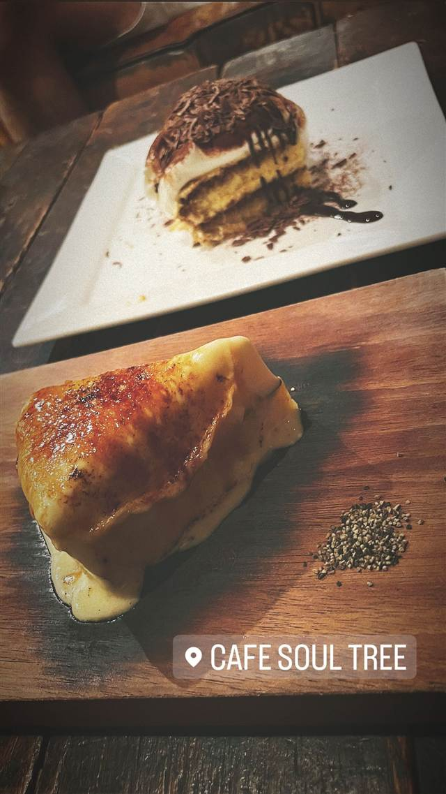
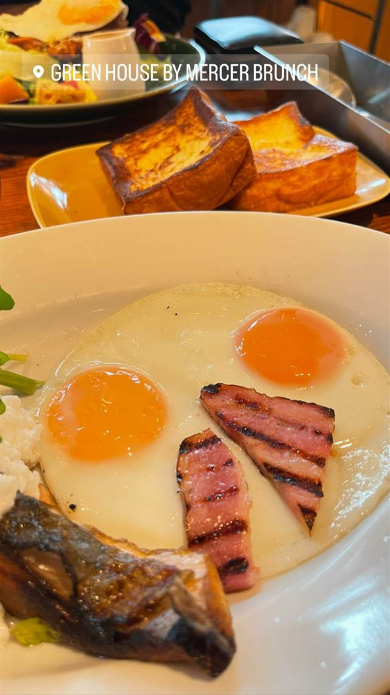

RIGOLETTO spice market（リゴレット スパイスマーケット）
世界のスパイスを効かせたパエリアが自慢のスパニッシュ×イタリアン
RIGOLETTO SPICE MARKET
「レストランサービスの神様」と称される新川義弘氏率いる株式会社HUGEが展開するイタリアン×スパニッシュのレストランブランド「RIGOLETTO」の二子玉川店。2021年4月に増床リニューアルし、テラス席を含む座席を拡大、世界のスパイスを使った料理とパエリアなどを提供している。
TRIVIA
豆知識
- 同じHUGEのブランド店「RIGOLETTO BAR AND GRILL」（六本木ヒルズ）の看板バーガーは、六本木グルメバーガーグランプリで3度受賞している
REVIEWS
世間の評判
3.49食べログ
個性的なスパイス料理とドリンク
- スパイスを活かした個性的な創作ドリンクや料理を評価する声が多い
- オシャレで活気のある店内と親切なスタッフ対応を評価する声が多い
- 値上がりが続く一方で一皿あたりの量は少なめだと指摘する声も多い
- 混んでいて予約なしでは待ち時間が長くなりやすいという声もある
食べログ 口コミ747件
| 創業 | 運営は株式会社HUGE。二子玉川ライズ・ステーションマーケット店は2021年4月15日に増床リニューアルオープン |
|---|---|
| 系譜 | 「レストランサービスの神様」と呼ばれる元グローバルダイニング副社長・新川義弘氏が率いるHUGEが展開する「RIGOLETTO」ブランドの一店舗（六本木ヒルズの「RIGOLETTO BAR AND GRILL」などと姉妹店） |
| 看板 | スパニッシュ・イタリアンのパエリア |
| こだわり | 世界各国のスパイスや食材を取り入れた料理構成 |
| どこから | 23区の外れ・近郊 |
| 予算 | 昼 ¥1,000～¥1,999 |
| 場所 | 二子玉川駅 東京都世田谷区玉川（二子玉川ライズ・ステーションマーケット1F） |
| メモ | 二子玉川ライズ・ステーションマーケット1F。2021年のリニューアルでテラス席含む44席を増設 |
食べたもの：パエリア
NEARBY
近い店・同じ系統の店
-
 ピザ 二子玉川駅
CHICAMA（チカマ）
ナポリ直輸入の日本最大級ピザ窯で焼くマルゲリータ
夜 ¥5,000～¥5,999
ピザ 二子玉川駅
CHICAMA（チカマ）
ナポリ直輸入の日本最大級ピザ窯で焼くマルゲリータ
夜 ¥5,000～¥5,999
-
 ピザ 二子玉川駅
Cotton（コットン）日本ワインと天然酵母ピッツァ
国産小麦粉と米粉を独自配合し48時間発酵させ500度の石窯で焼く
夜 ¥4,000～¥4,999
ピザ 二子玉川駅
Cotton（コットン）日本ワインと天然酵母ピッツァ
国産小麦粉と米粉を独自配合し48時間発酵させ500度の石窯で焼く
夜 ¥4,000～¥4,999
-
 カフェ 二子玉川駅
カフェ リゼッタ 二子玉川店（Cafe Lisette）
食べログ「カフェ百名店」に2年連続選ばれたプリンアラモード
昼 ¥1,000～¥1,999 夜 ¥1,000～¥1,999
カフェ 二子玉川駅
カフェ リゼッタ 二子玉川店（Cafe Lisette）
食べログ「カフェ百名店」に2年連続選ばれたプリンアラモード
昼 ¥1,000～¥1,999 夜 ¥1,000～¥1,999
-
 コーヒー 二子玉川
365日とコーヒー（365日とCOFFEE）
人気ベーカリー「365日」が手がける、同店初のカフェ業態
昼 ¥1,000～¥1,999 夜 ¥1,000～¥1,999
コーヒー 二子玉川
365日とコーヒー（365日とCOFFEE）
人気ベーカリー「365日」が手がける、同店初のカフェ業態
昼 ¥1,000～¥1,999 夜 ¥1,000～¥1,999
-

カフェ 二子玉川駅（徒歩約14分） Cafe Soul Tree（カフェソウルツリー） 築40年の元鉄工所を改装し食器や家具まで手作りする工房のような空間 昼 ¥1,000～¥1,999 夜 ¥3,000～¥3,999 -

ブランチ 二子玉川駅 GREEN HOUSE by MERCER BRUNCH 二子玉川（旧店名：BRENTWOOD TERRACE） 外はカリッと中はとろとろ、累計500万枚のフレンチトースト 昼 ¥2,000～¥2,999 夜 ¥4,000～¥4,999